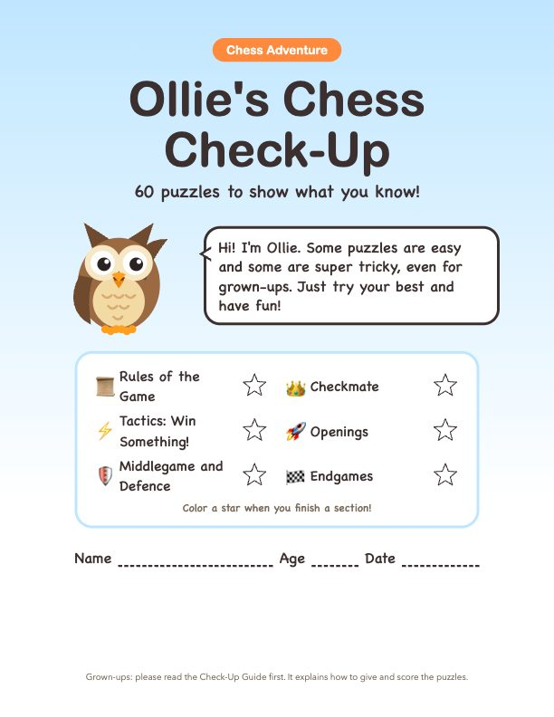
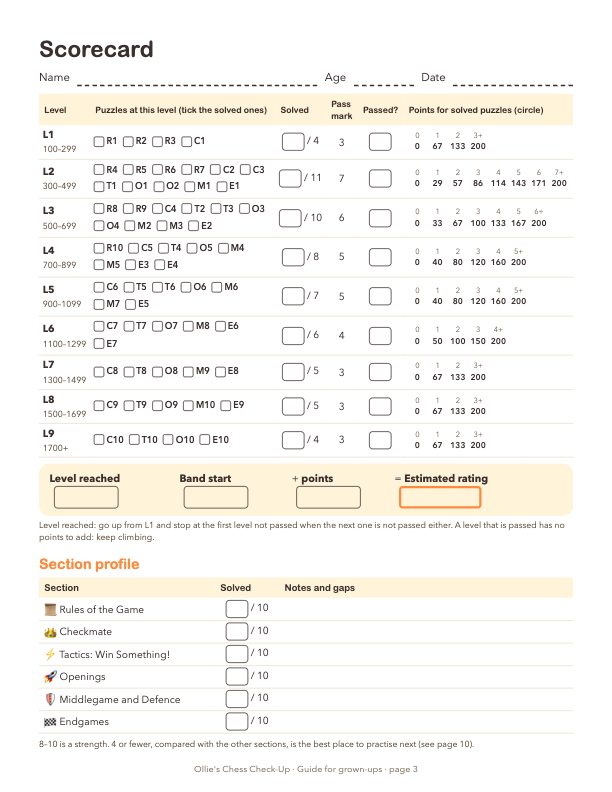

Chess Adventure
Ollie's Chess Check-Up
A printable chess check for kids: 60 puzzles that show their level, and an estimated rating from 100 to 1800+ on the same scale as chess.com.

For the childPuzzle booklet
60 puzzles in 6 sections, from the first rules to tricky endgames. 20 pages, no answers inside.
Open the PDF · 1.6 MB
For grown-upsGuide and answer key
How to give the Check-Up, a scorecard, the answer key with diagrams, and what to practise next. 10 pages. It has the answers, so keep it away from little eyes!
Open the PDF · 0.6 MBHow it works
- Print both PDFs on US Letter paper (on A4, choose "Fit to page"). Color looks best.
- Read the guide's first two pages. They take about 5 minutes.
- Give one section at a time, 15–25 minutes each. Read the questions aloud if needed, give no hints, and stop a section after 3 misses in a row.
- Score it with the answer key and the scorecard to get a level from 1 to 9, an estimated rating, and the child's strong and weak areas.
- Confirm it with games. The rating is an estimate (about ±150); 3–5 games against a computer near that rating will tell you more.
What it covers
How the pieces move, check, checkmate and the special rules.
Find the move that checkmates. For "mate in 2" or "mate in 3", write the first move.
Find the move that wins material, or more.
How to start a game, and the early traps to know.
Count attackers and defenders, spot the opponent's threat, and use pins and traps.
Few pieces left: checkmate, promote pawns, and know which endings win.
Levels
| Level 1 | 100–299 | Knows how the pieces move and what check means. |
| Level 2 | 300–499 | Spots mate in one and free pieces; knows checkmate, promotion and how pawns capture. |
| Level 3 | 500–699 | Uses simple forks and back-rank mates; knows stalemate and castling; avoids early traps. |
| Level 4 | 700–899 | Sees pins and threats, captures safely; knows en passant and the square of the pawn. |
| Level 5 | 900–1099 | Finds skewers, discovered attacks and two-move mates; knows basic drawn endings. |
| Level 6 | 1100–1299 | Combines two ideas (check plus fork); knows the opposition and opening tricks. |
| Level 7 | 1300–1499 | Removes defenders, finds quiet key moves, wins pawn endings by breakthrough. |
| Level 8 | 1500–1699 | Calculates deflections and sacrifices; knows the Lucena position and opening traps. |
| Level 9 | 1700–1800+ | Finds deeper sacrifices (mate in 3, the Greek gift) and the Philidor defence. |
Each section starts easy and gets harder. A level is passed when 60% of its puzzles are solved.